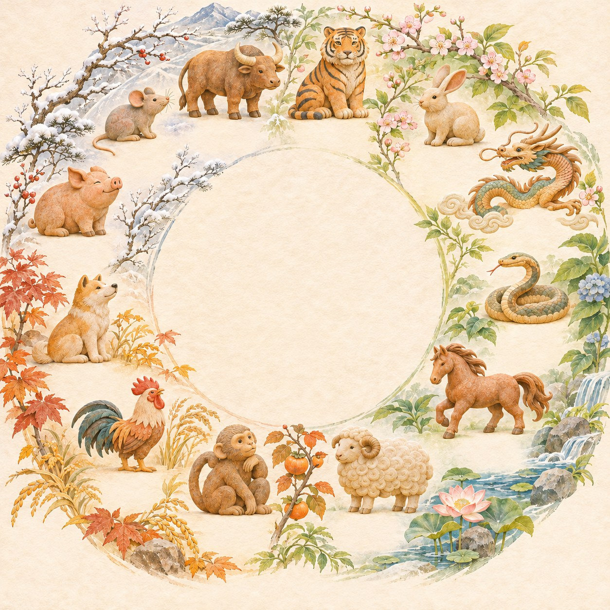
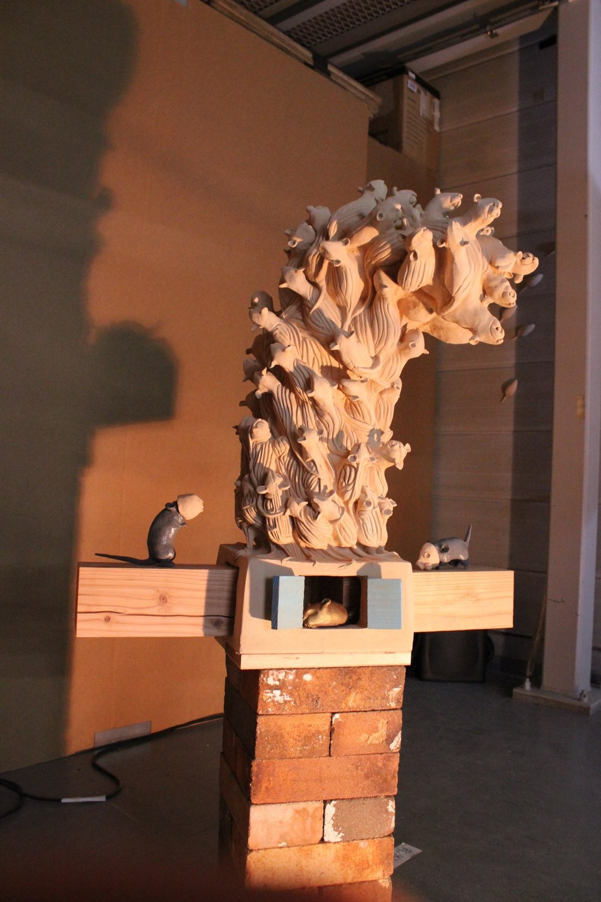

01 / 06
제가 만드는 호랑이는
봄을 깨웁니다
2월 · 대지를 깨우는 호랑이

조각가 최희원
넘겨 보기 →
조각가 최희원 · 1080×1350 (4:5) 인스타그램 규격
2월 · 대지를 깨우는 호랑이
십이지 × 계절


子 · 쥐 작업입춘 立春
아직 차가운 땅 아래에서
새로운 생명이 움직일 준비를 합니다.


땅을 딛는 한 걸음
몸의 무게가 대지로 전해지고,
그 울림이 잠든 생명에 닿습니다.
사람 사이의 힘
누군가를 만나고 나면 멈춰 있던 마음이
움직이고, 다시 시작할 용기가 생깁니다.
댓글로 들려주세요
각 카드의 PNG 파일(1080×1350)은 저장소의 cardnews-tiger/png/ 폴더에 있습니다.